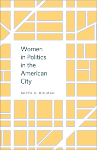

<body bgcolor="#FFFFFF" text="#000000" link="#0000FF" vlink="#CC0000" alink="#CC0000"><center><hr width="350" size="1" align="center" noshade>How and why gender matters in framing and determining urban policy and politics<hr width="350" size="1" align="center" noshade><p><a href="https://cdcshoppingcart.uchicago.edu/Cart/ChicagoBook.aspx?ISBN=9781439911709&&PRESS=temple" target="_top">Buy this book!</a> | <a href="https://cdcshoppingcart.uchicago.edu/Cart/Cart.aspx?PRESS=temple" target="_top">View Cart</a> | <a href="https://cdcshoppingcart.uchicago.edu/Cart/Cart.aspx?PRESS=temple" target="_top">Check Out</a></p><p></p></center><!--none//--><h1>Women in Politics in the American City</h1>
<h3>Mirya R. Holman</h3>
<P>cloth 1-4399-1170-3 $79.50, Nov 14, <FONT COLOR=#990033>Available</FONT>
<br>Electronic Book 1-4399-1172-X $79.50 <FONT COLOR=#990033>Available</FONT>
<BR> 212 pp
5.5 x 8.25
20&nbsp;tables 27&nbsp;figures
</P><BLOCKQUOTE><I>"</I>Women in Politics in the American City<I> systematically examines an important question—the impact of gender on municipal government—in a far-reaching way and at a time when we may expect women to be more likely to enter politics in the near future. The findings are compelling and represent a developing area in the scholarship on representation from a democratic theory perspective. There is simply no other work that examines women at this level of government so thoroughly."</i> <br>&#151<b>Melissa Deckman</b>, Louis L. Goldstein Professor of Public Affairs and Chair of the Political Science Department at Washington College in Maryland</I></BLOCKQUOTE>
<P>How do female municipal leaders influence policymaking in American cities? Can gender determine who gets a say in local politics or what programs cities fund? These are some of the questions raised and answered in Mirya Holman's provocative<I>Women in Politics in the American City</I>.
<P>This book provides the first comprehensive evaluation of the influence of gender on the behavior of mayors and city council members in the United States. Holman considers the effects of gender in local, urban politics and analyzes how a leader’s gender does and does not influence policy preferences, processes, behavior, and outcomes.
<P>Through her effective use of original survey data to evaluate policy attitudes, along with observations of city council meetings and interviews with leaders and community members, Holman demonstrates the importance of considering the gender of leaders in local office.
<P><I>Women in Politics in the American City</I> reveals not only that the involvement of women in local politics matters but also that it has significant consequences for urban policy and for state and local democracy.
<BR>&nbsp;<h2>Excerpt</h2><P>Excerpt available at <a href="http://www.temple.edu/tempress">www.temple.edu/tempress</a></p>
<BR>&nbsp;<h2>Reviews</h2>
<p><i>"Holman poses an unusual question on a topic few have studied: Does electing women to municipal office make a difference in policy decisions? The author answers that women mayors and council members bring a neglected perspective to policymaking and support women’s issues...more frequently than men in local office.... Holman’s research relies on interviews and surveys, and the book is replete with tables and diagrams, copious notes, an extensive bibliography, and several appendixes."</i> <br>&#151<b><i>Library Journal</i></b>
<p><i>"The underrepresentation of women in American politics at both the state and national levels has been addressed by many scholars.... In this extraordinarily researched work, Holman extends this line of inquiry to American city politics.... Holman employs rich survey, interview, and textual data to help us understand the ways in which female leaders at local levels make a difference in urban politics.... The book impressively speaks to an important issue in political science with both methodological rigor and a clear-cut analytical framework.... Holman shows us directly that women can make a positive difference in local politics."</i><br>&#151<b><i>Political Science Quarterly</i></b>
<p><i>"Using surveys, interviews, and observations of council meetings, Holman analyzes whether gender matters in the policies local governments pursue. She finds that 'women's issues'—such as education, social welfare, and violence against women—are more likely to be high on the public’s agenda when women lead cities, especially when female mayors are supported by high proportions of women on city councils. In contrast, men tend to focus on development and crime.... Holman offers a meaningful analysis of how gender impacts local policy.... Summing Up: Recommended."</i><br>&#151<b><i>Choice</i></b>
<p><i>"</i>Women in Politics in the American City<i> is a welcome addition to the literature on women elected officials in the United States. Holman tackles the formidable empirical challenge of studying women in local government, while providing a useful reminder of the historic connection between women’s activism and commitment to 'municipal housekeeping.' Drawing on a variety of sources, Holman systematically and carefully examines the role of female mayors and their impact on policymaking at the municipal level.... [T]his book offers concrete evidence of the significant consequences of women’s representation in local government."</i><br>&#151<b><i>Journal of Women, Politics & Policy</i></b>
<p><i>"Holman reminds us of the long history of American women’s activism and influence on a variety of 'urban women’s issues' concerning children and education, welfare and poverty, affordable housing, and violence against women. Then, by rallying a veritable treasure trove of original data, she shows how women holding local office in 21st century America carry on in this tradition.... Holman’s contribution is not simply a thoroughly vetted and unexpected new 'data point' demonstrating the impact of women in public office. Rather, her analysis is most interesting when she cautions against overly simplistic theories of descriptive and substantive representation and argues that 'sheer numbers' of women in local office is often not enough."</i><br>&#151<b><i>Perspectives on Politics</i></b>
<BR>&nbsp;<h2>Contents</h2><P>
<p>Acknowledgments
<br>
<br>1. Urban Government, Democracy, and the Representation of Gender in the United States
<br>2. She Says, He Says: Gender and Policy Attitudes
<br>3. Gender, Power, and Policy Making in American Cities
<br>4. The More Democratic Sex? Deliberative Democracy, Gender, and Urban Governance
<br>5. Sex and the City: Policy Outcomes and Urban Leadership
<br>6. For the Good and the Bad of the City: Female Leaders and Urban Interests
<br>
<br>Appendixes
<br>&nbsp;&nbsp;Chapter 2
<br>&nbsp;&nbsp;<i>A: Hundred-City Survey</i>
<br>&nbsp;&nbsp;<i>B: Three-Hundred-City Survey</i>
<br>
<br>&nbsp;&nbsp;Chapter 3
<br>&nbsp;&nbsp;<i>A: Coding of City Council Minutes’ Subject Matter</i>
<br>&nbsp;&nbsp;<i>B: Interview Questions for Mayors and City Council Members</i>
<br>&nbsp;&nbsp;<i>C: Mayoral Gender and Community Discussions</i>
<br>
<br>&nbsp;&nbsp;Chapter 4
<br>&nbsp;&nbsp;<i>A: Organizations and Individuals Active in Cities</i>
<br>&nbsp;&nbsp;<i>B: Questions for Citizens Active in the Community (Paper and E-mail Questionnaire)</i>
<br>
<br>&nbsp;&nbsp;Chapter 5
<br>&nbsp;&nbsp;<i>Budget Coding Information</i>
<br>
<br>Notes
<br>Bibliography
<br>Index
</P><BR>&nbsp;<H2>About the Author(s)</H2>
<P><b>Mirya R. Holman</b> is Assistant Professor of Political Science at Florida Atlantic University.</P>
<BR><H2>Subject Categories</H2>
<p><A HREF="/tempress/political.html" TARGET="_top">Political Science and Public Policy</a>
<BR><A HREF="/tempress/women.html" TARGET="_top">Women's Studies</a>
<BR><A HREF="/tempress/urban.html" TARGET="_top">Urban Studies</a>
</p>
<p align="center"><a href="https://cdcshoppingcart.uchicago.edu/Cart/ChicagoBook.aspx?ISBN=9781439911709&&PRESS=temple" target="_top">Buy this book!</a> | <a href="https://cdcshoppingcart.uchicago.edu/Cart/Cart.aspx?PRESS=temple" target="_top">View Cart</a> | <a href="https://cdcshoppingcart.uchicago.edu/Cart/Cart.aspx?PRESS=temple" target="_top">Check Out</a></p><p><font face="Arial" size="1"><a href="copyright.html" onMouseOver="window.status='Web Copyright Policy';return true;" onMouseOut="window.status=''" title="Web Copyright Policy">&copy;</a> 2016 <a href="http://www.temple.edu" target="new" onMouseOver="window.status='Link to Temple University home page';return true;" onMouseOut="window.status=''" title="Link to Temple University home page">Temple University</a>. All Rights Reserved. http://www.temple.edu/tempress/titles/2335_reg.html</font></p>